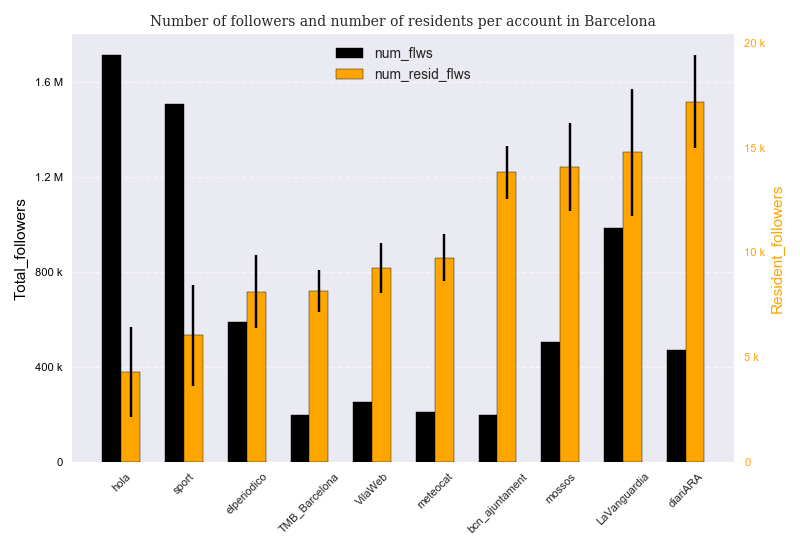
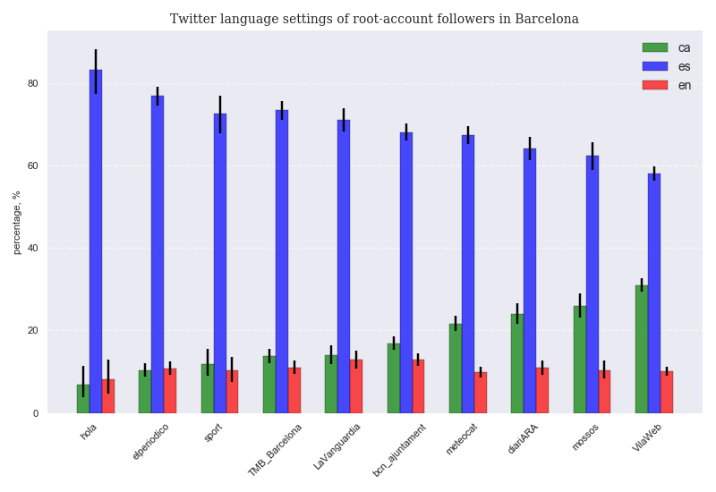
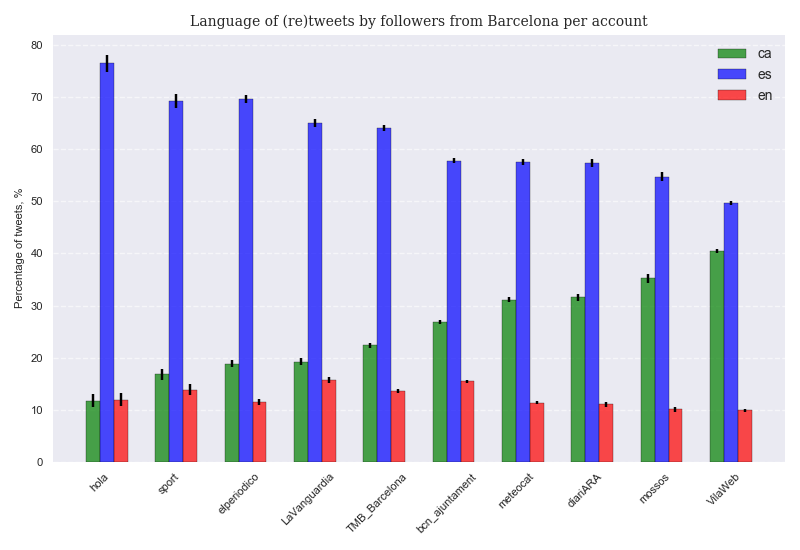
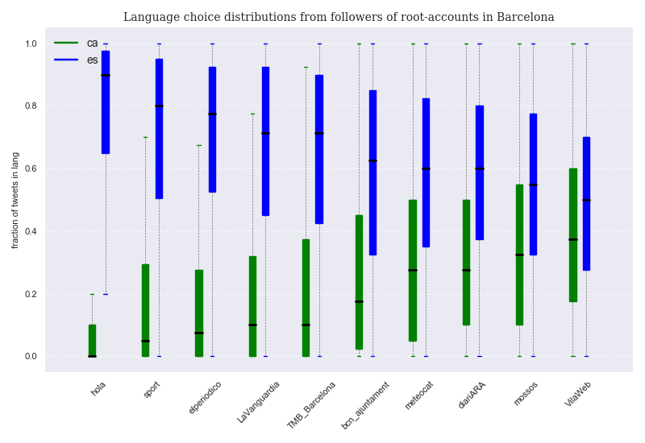
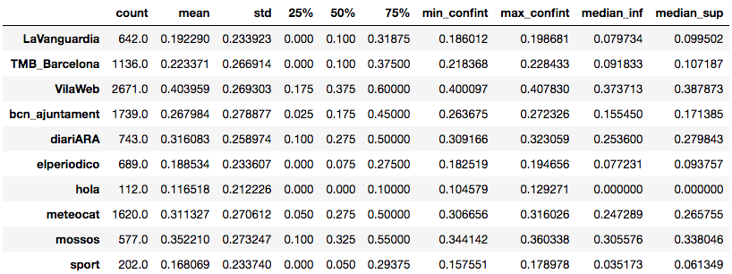
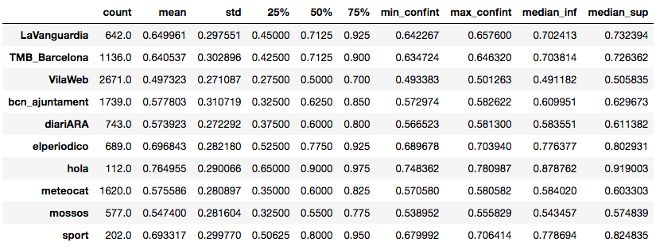
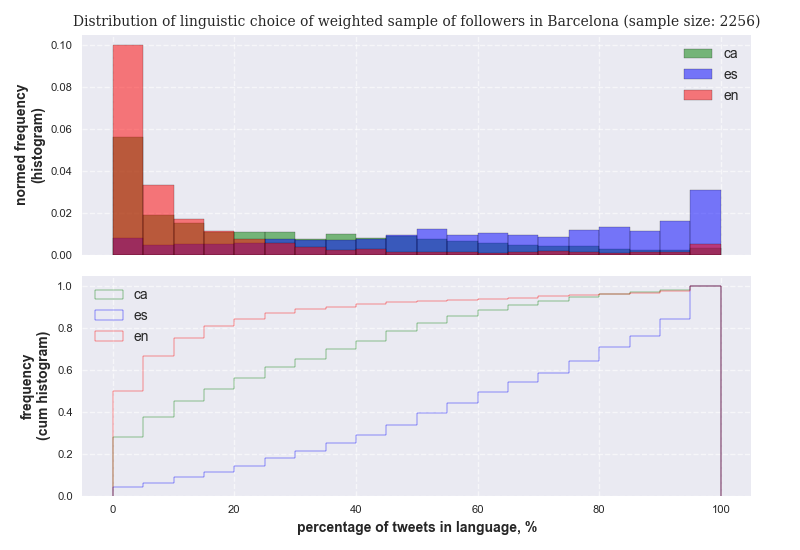
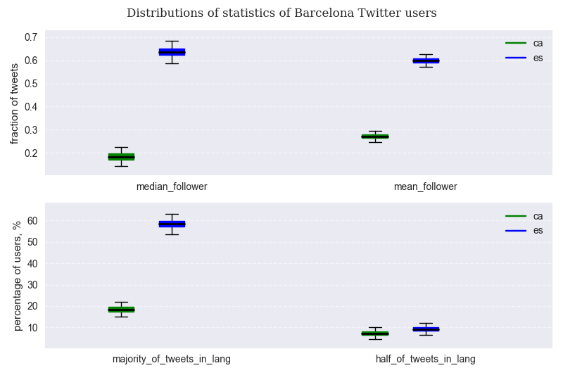
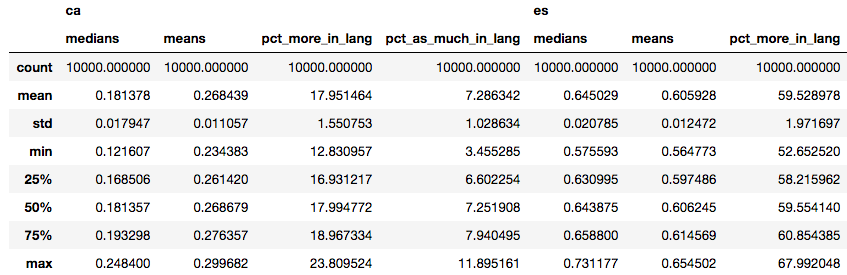

Introduction¶
In this post we will explore the linguistic behavior of Barcelona residents that are also active on Twitter. Barcelona is officially a bilingual city where Catalan and Spanish have been regularly heard on its streets since at least the end of the 16th century. Whereas the Catalan language developed as a local dialect from Latin, Spanish was initially imported through political and cultural influence, later through several periods of repression against Catalan from central authorities and more recently due to massive immigration from Spanish regions in the 20th century. However, when we claim that a city is bilingual, more often than not we are not conveying the effective linguistic reality of that city: individual bilingualism is rarely perfect, many residents may still be monolinguals, and one of the two languages may clearly dominate the other in everyday life. It is a matter of constant political debate whether Catalan ( a local language still spoken by a few millions ) will be able to coexist with Spanish ( a global language spoken by hundred of millions ) , and for how long. The purpose of this post is to quantify the degree of use of each language in spontaneous, informal written communication. In order to accomplish this task, we focused on the activity of Twitter users that are also residents in the city of Barcelona. Even though language surveys to quantify the linguistic reality are regularly carried out in Catalonia, they suffer from the limitation of having to rely on the reporting from sampled people ( and humans are notoriously biased when reporting statistics on their own activity ). Instead, we believe that analyzing randomly sampled linguistic data from Twitter should allow for less subjective estimates. Unfortunately, the current study will only provide a picture of the current linguistic reality: since Twitter is a very recent social networking service, in order to identify trends the same study should be carried out once every few years.
Identification of sources of bias in Twitter random samples¶
The first step in a language survey is to ensure unbiased sampling and, in case bias cannot be avoided, at least describe and quantify it. Since we will be sampling from Twitter users only, it is clear that our sample will not be entirely random. It is therefore important to reason whether this may introduce bias in favor of one of the two languages. We identify three main relevant bias inherent to Twitter-based samples:
Age bias: Assuming Twitter demographics do not vary too much across the globe, a few conclusions from available statistics on Twitter users in the US when compared to US demographic data can be drawn:
- Speakers younger than 15 will not be represented
- Speakers older than 65 will be underrepresented
- Speakers between 18 and 30 will be overrepresented
In order to understand how this bias can affect our conclusions, we need to consider that the vast majority of the population of Barcelona educated under the dictatorship of General Franco from 1939 to 1975 will not feel at ease when having to write in Catalan even in the case that Catalan happened to be their mother tongue. The language was completely banned from the regular school system until 1978, when a new Constitution was adopted. Therefore, only people younger than 40 will have had the chance of learning to write in Catalan at school. In a way, the fact that people younger than 40 are overrepresented in the sample is balanced by the fact that these people are indeed those having the least bias when it comes to decide in which language to communicate. The main conclusion is that our sample, for the very fact of being a sample drawn from Twitter users only, will have a bias in favor of Catalan as compared to the linguistic reality of Barcelona's population older than 18.
Education bias: Twitter users are more likely to be in college or to have a college degree than if they were randomly sampled from population. Since in Barcelona Catalan is more spoken among people of educated classes than from less educated backgrounds, the educational bias will result in an overrepresentation of Catalan speakers with respect to a random sample of inhabitants.
Income bias: This bias , correlated with the previous one, results from the fact that Twitter users are likely to have above-average income. Since Catalan is much less spoken among low income inhabitants than among middle income ones, again many people that prefer to communicate mostly in Spanish will not be adequately represented in our samples. We expect the income bias from Twitter samples to overrepresent Barcelona inhabitants that speak and write fluent Catalan.
Because of all the listed bias, the conclusions of this study will not apply to the population of Barcelona as a whole, but rather to that part of the population between 18 and 50, with higher-than-average income and educational levels.
Methodology¶
10 Twitter accounts that we deem representative of the cultural spectrum of the city of Barcelona are selected (we will refer to them as the 'root accounts'). The criteria used for the selection are the following:
- Accounts must be relevant ( hundreds of thousands of followers )
- Accounts must be related to the city of Barcelona as much as possible
- At least half of the accounts must be as politically neutral as possible
- Accounts must cover the actual cultural spectrum of the city: they must range from a strong commitment towards the minority language to a very weak one, if any
- Accounts must be written in any of the two languages at study
- Accounts must have been active for several years( not too recent )
The following are the selected root accounts ( in parenthesis the name and language of the account ):
- ARA (@diariARA, CAT) : the most widely distributed newspaper in Catalan language. Moderate nationalistic views
- BCN_Ajuntament (@bcn_ajuntament, CAT) : the official Twitter account of Barcelona's City Council.
- Hola (@hola, SPA) : weekly magazine specialising in celebrity news. Currently published in Madrid but founded during the dictatorship in Barcelona in 1944. In Spanish only.
- El Periódico (@elperiodico, SPA) : the second newspaper by sales in Catalonia, edited in both Spanish and Catalan (automated translation). Twitter account is only in Spanish.
- La Vanguardia (@LaVanguardia, SPA) : the most widely circulated newspaper in Catalonia. Available in both Spanish and Catalan (automated translation), but official Twitter account is only in Spanish.
- Mossos (@mossos, mostly CAT) : the official Twitter account of the Catalan regional police
- Meteocat (@meteocat, CAT) : the official Twitter account of the Meteorological Service of Catalonia
- Sport (@sport, SPA) : one of two main sports newspaper published in Barcelona, published in Spanish only
- TMB_Barcelona (@TMB_Barcelona, CAT) : the official Twitter account of Barcelona public transport service
- Vilaweb (@VilaWeb, CAT) : an online newspaper with a strong focus on Catalan culture and language
Of these accounts, we consider @meteocat, @mossos, @TMB_Barcelona, @sport and @hola to be politically neutral. Political neutrality does not imply cultural neutrality.
In order to quantify the aggregate linguistic behavior of the followers of each root account, we first need to characterize the linguistic choice of each follower in statistical terms. The streaming of tweets was carried out using tweepy, a handy python wrapper of the Twitter API. The detailed process to identify the statitiscal distribution of the linguistic choice among the followers of a given root-account can be found in the appendix ( code details can be checked on this GitHub repo ).
Having an aggregate view for each account is important, but ideally we would like to quantify the linguistic preferences for the city as a whole. The way to obtain this is via a weighted average of the followers' linguistic choices, where the weight measures the relative importance or relevance of each account in terms of resident followers. In order to do that, we need to estimate and compare the relative number of city residents followers per root account as explained in the next section.
Relative importance of each root account¶
Since some of the accounts tweet exclusively in Spanish (a widely spoken language) and since we do not know what percentage of the followers of these accounts comes from other Spanish-speaking regions of the world, the total number of followers per account is not a good measure of the relative popularity of each account in Barcelona. Therefore, we need to quantify the degree of popularity of each account among explicit residents in Barcelona. In order to accomplish this task, we compute the fraction of explicit residents among the streamed followers and we multiply by the total number of followers to estimate the approximate total number of residents per account( in order to compute this proportion, we only consider the geolocation variable: we do not apply any further filter concerning other user variables such as number of tweets or number of followers)
Notice that for some accounts with over a million followers (such as @hola or @sport), it is more expensive to stream Barcelona residents, because their density is very low : these are accounts that are popular also outside Catalonia. As a consequence, their final samples will be smaller as compared to other accounts that have a much higher density of local followers such as @TMB_Barcelona or @bcn_ajuntament
Four out of the five most popular sites are written entirely in Catalan, whereas the three least popular accounts are all in Spanish. The printed version of @LaVanguardia currently has a much larger distribution than that of @DiariARA in Barcelona, but on Twitter the former has slightly less estimated resident followers than the latter. This seems to confirm that the Twitter sample is biased towards Catalan content when compared to the real population.

Twitter language settings per root account¶
A first indication of each language relative relevance is provided by the language settings of the account of each follower. In most cases, the default language ( worked out by algos based on computer settings and installations ) will be accepted by users unless they strongly prefer an alternative language. Therefore, in this case there is a strong bias towards the dominant official language: Spanish is still the default language for virtually all commercial computers or smartphones sold in Barcelona. Nevertheless, it is possible ( and simple ) to change the settings of a Twitter account to Catalan language.

Results show that Spanish is by far the default language for most users from all accounts, with a peak of more than 80% for @hola followers and a minimum of almost 60% for @VilaWeb followers. Even in the case of @Vilaweb, only 3 users out of 10 on average have their language settings in Catalan. In some cases, we assume users are not even aware they can switch the setting. It's the language inertia so common in diglossic environments, where it is assumed that some activities or services are provided in one language only.
Percentage of tweets in each language per root account¶
In order to have an idea of the relative weight of each language per account, since every follower will contribute with the same amount of tweets to the final sample per account, we can compute the percentage of tweets in each language per account by considering all tweets from the account followers and computing the ratio in each language.

We observe that there is a higher proportion of tweets in Catalan as compared to the percentage of lang settings in Catalan. The conclusion is that some users that regularly tweet also in Catalan have their settings in Spanish ( a default option they feel comfortable enough with). One of the most telling results from this graph is that the majority of (re)tweets from followers of @VilaWeb (widely considered a Catalan nationalist publication) are in Spanish.
Language choice distribution of resident followers per root account¶
Language choice percentages give us a general idea of language preference, but we have yet to explore how this preference is actually distributed among users. Do most followers (re)tweet in both languages for all accounts? What proportion of followers tweet in only or mostly one language for each account?
Since we have 40 classified tweets per selected follower, we can compute the ratio of tweets in each language for each follower. After sorting all user ratios per language and per account, we can make box plots of the data. Box plots allow to quickly visualize distributions: data is divided into 4 groups by its 3 quartiles. Each box contains 50% of the data as determined by the first and the third quartiles, and is divided in two parts by the median of the sorted data (the middle point from lower to higher value, and also its second quartile). The interval defined by the upper and lower whiskers contains almost all of the data, except for those values that are considered statistical outliers. We plot two box plots per account: one for Catalan ratios, another for Spanish ones ( English is not considered here ).

The first thing we should point out is how, for most accounts, the median values (black line inside boxes) are mostly far away from a balanced score ( 0.5 ), but especially for those that tweet in Spanish ( the leftmost four ). For these accounts, the distributions are very skewed, showing a relatively large proportion of users that tweet only or almost only in Spanish. Only in the case of @VilaWeb followers, a more even distribution for both languages is found. As a consequence, while the median follower of @hola does not tweet in Catalan at all, and that of @sport only 5% of the times, the median follower of @VilaWeb tweets almost 40% of the times in Catalan. It is interesting to notice that while users that tweet only or almost only in Catalan are non existent or considered outliers for the accounts that tweet in Spanish, users that tweet only or almost only in Spanish are not outliers for any of the accounts under consideration. In any case, all median followers (re)tweet more often in Spanish than in Catalan. In addition, they do so by very consistent margins, since all median followers (re)tweet more than half of the times in Spanish, even in the case of @VilaWeb.
The described data can also be explored in numerical form thanks to the following tables, where 95% confidence intervals for both the mean and the median of each account and for each language are also provided:
Catalan language: 
Spanish language: 
In the case of each of the four accounts whose tweets are in Spanish, 75% of their followers write more than 50% of their tweets in Spanish. On the other hand, for these very accounts, 75% of their followers write less than 30% of their tweets in Catalan.
Language choice distribution at city level: the weighted sample of account followers¶
In order to draw statistically relevant linguistic conclusions for the city as a whole, we have to bring samples of followers of different root accounts together, by weighing them according to the relative size of each account in terms of resident followers. Since we cannot possibly sample all accounts that have a link with the city of Barcelona, we have to make the hypothesis that the chosen root accounts are collectively exhaustive of the population of Barcelona-resident Twitter users (i.e., each Barcelona-resident Twitter user is also a follower of at least one of the chosen accounts. Given the criteria employed for the selection of the root accounts, we consider that this hypothesis is an acceptable approximation). We can then join all subsamples by considering unique agents only.
Once the weighted sample of followers is calculated, we can associate their observed lang proportions to each user and describe the aggregated linguistic choices at city level. The resulting distribution for each language choice can the be computed, as well as the average and the median of the weighted sample.
The distributions for each language are visualized in the following figure. It is important to point out how different, even in the case of the weighted distribution, the Catalan and Spanish distributions are: whereas the mode of the Catalan use distribution occurs for proportions of tweets in that language between 0 and 5%, in the case of Spanish the mode is just on the opposite end; that is, for percentage of use comprised between 95% and 100%. In addition, whereas 30% of city users write less than 5% of tweets in Catalan, only 3% of users write less than 5% of tweets in Spanish. This means that a significant part of the population barely uses Catalan for tweeting, whereas Spanish - though in different degrees - is used by almost everybody in the city. On the other hand, only less than 20% of city residents write the majority of their tweets in Catalan, whereas approximately 60% of them tweet the majority of times in Spanish.

Notice how the values from the previous picture are just the result of a specific sample, without any notion of value uncertainty: the shown distributions are derived from the observed account relative weights ( the proportions of city residents per account) and the observed language proportions for each user as computed from unique samples each. In reality, both types of proportions are random variables for which we only have access to one realization. In order to have a reliable statistical view on the statistics at city level and define confidence intervals for average and median values at the aggregated level, we have to apply the central limit theorem to simulate random variable realizations a significant number of times, both for residents proportions per account and language proportions per user. We will simulate the value of accounts' relative weights a 100 times, and each user's language proportions another 100. This results in 10000 different virtual weighted samples, from which we can easily construct confidence intervals for the relevant statistics. See the appendix for more details on the procedure.
We can now plot the variation of the linguistic median and mean at city level, as well as that of the percentage of users that prefer a given language. Again, distributions are encapsulated in the form of box plots. The lower and upper box whiskers are set on the 1% and the 99% percentiles of each distribution: extreme values that fall beyond these limits are not shown.

We observe that, from a Catalan-speaking perspective, the median follower from Barcelona is extremely unlikely (less than 0.1%) to tweet more than 23% of the times in Catalan. On the contrary, the median follower from a Spanish-speaking perspective is extremely unlikely to tweet less than 57% of the times in Spanish. More importantly, in an extreme best case scenario for Catalan, only about 23.5% of users will prefer this language to tweet, whereas even in an extreme worst case scenario for Spanish, 53% of Barcelona residents will prefer this language for their tweets. The discussed values can be more easily checked in the following table

Comparison to official data¶
In the last available Enquesta d'usos lingüistics , a linguistic poll carried out among older-than-14 years old residents in the city of Barcelona in 2013, the sampled population was asked about their linguistic choices for different activities : family chatting, business conversations, shopping, etc. Amongst the inquired fields, there is one that can be compared to the data we have gathered : 'Escriure notes personals', that is, writing personal notes. The percentage of the sampled population that claims to prefer Catalan for such activity is 25,1% ( a similar value to that from the 2008 poll). Since the poll is based on a relevant and stratified sample from the entire city, it includes people older than 50 that never learnt to write in Catalan and also people from lower backgrounds (that mostly do not speak Catalan) more unlikely to have a Twitter account. It is therefore surprising that our weighted sample, that in principle has a bias in favor of Catalan, yields lower percentages ( 18% on average) of people that prefer to write in Catalan as compared to the official poll ( even though we compute percentages on a reduced linguistic choice of 3 languages only). Since both the poll and our sample account for people that do not write neither in Catalan nor in Spanish, it could be argued that the difference comes from a higher weight in the Twitter sample of either foreigners or highly educated Catalan-speakers that prefer to write in English when tweeting. The percentage of users that prefer to write in English is about 7%, a percentage in line with the figure from the poll for people that prefer to write in a language other than Catalan or Spanish. Since the poll percentage includes also other languages such as Italian, French or German, indeed English is slightly overrepresented in the Twitter sample. But percentages of Spanish preference on Twitter are higher ( 61.3% in Twitter vs 57.7%) than on the poll, apparently suggesting that Spanish speakers are overrepresented in the sample ( which is counterintuitive for the reasons already explained).
A possible explanation to this conundrum is that people in the poll tend to have too optimistic assessments of their use of the minority language, mistaking fact with wish.
Conclusions¶
A sample of relevant Twitter accounts mostly written in Catalan reveals a clear preference for Spanish in the tweets written by their Barcelona-resident followers. Barcelona is officially a bilingual city, but, at least among its Twitter users, this bilingualism is strongly asymmetrical : Spanish is consistently the most frequently used language, either out of preference, inertia or maximization of interaction. Since the chosen sample is likely to have a bias in favor of Catalan as compared to the linguistic reality of the city, the most relevant conclusion from the evidence gathered through tweets is that there is a significant part of society (around 30%) that makes marginal use, if any at all, of the Catalan language.
When compared to similar results from a linguistic poll carried out in Barcelona in 2013, the Twitter sample offers a less favorable view on the use of Catalan than that of the poll, even though Twitter samples are supposed to overrepresent Catalan speakers. This may suggest that some people may have a too optimistic assessment of their use of the minority language when reporting their linguistic habits in polls.
Another important conclusion is that a linguistically balanced environment is only provided by accounts that on paper are skewed (because of the language they are written in) towards the minority language, whereas accounts that tweet in Spanish -the dominant language-, feature a group of followers that linguistically are very unbalanced.
Appendix¶
Computation of the distributions of language choice by followers of root accounts¶
The following are the steps that have to be executed in order to obtain the distribution of language choice among followers of each root account.
Select a root account
For the selected root account, obtain a sample of at least 100 city-resident followers with a sufficient number of (re)tweets and followers. It is crucial to ensure that the sample is indeed as random as possible. Since in the process of selecting tweets from users we will be forced to apply several filters in order to ensure reliability of the data, it is important to discuss the potential sources of bias one by one.
- Selected root-account followers must have the location activated in order to identify them as city residents. Unfortunately, the proportion of Twitter users that activate the geolocation field is very low ( approximately 10% ) : this makes the retrieval process quite costly, since the Twitter API currently does not allow to stream more than 3000 followers every 15 minutes. We assume no linguistic bias is associated with the activation of the geolocation.
- A limitation of the Twitter API is that followers data can only be streamed in chronological form, from most recent to oldest, thus potentially introducing another source of bias. However, it was verified that the process of selecting the most recent followers is approximately equivalent to taking a random sample of the entire list of followers ( time does not introduce significant bias ). This makes the process of retrieving relevant followers much less expensive than taking a proper random sample after having downloaded the entirety of followers
- Selected users need to have twitted or retweeted at least 60 times ( a compromise between statistical significance and computational cost). In addition, in order to avoid dummy or irrelevant accounts as much as possible, users need to have a minimum number of followers ( >= 50 ). It is assumed that filtering follower accounts by a minimum number of followers and (re)tweets does not introduce any significant source of bias in linguistic terms
Stream the 60 most recent tweets posted by each considered follower from the sample obtained in step 2. Considered tweets will include retweets and replies to other tweets.
Establish how many of these tweets can be linguistically identified. Linguistic identification is implemented by comparing results from the Twitter algorithm to those from langdetect, a Python library for text language detection. Only tweets for which both language detection algorithms provide the same result are kept. Discard tweets for which language cannot be reliably identified because of discording output between language detection algos.
Keep only tweets written in local languages as well as English
After applying the filters from step 5 and step 6, keep only followers with at least 40 remaining tweets ( a compromise between statistical significance and computational feasability), and drop all followers with less than 40 remaining tweets. In order to have an even weight from all followers, keep only 40 tweets for each follower.
Each tweet from a given user and from a given language perspective is considered as a random Bernoulli variable. Therefore each list of tweets per follower of size n = 40 is a sample from a binomial distribution, in which success is a tweet written in a particular language $ L $ and failure any tweet written in another language. For each relevant follower $ i $ and each applicable language, compute the sample mean $\bar p_{i,L}$ ( an estimate of the success probability $p_{i,L}$). We call this sample mean the follower's linguistic mean. Each follower will have as many linguistic means as different languages are taken into consideration.
For each language, analyze the statisitcal properties of the distribution of the linguistic means of all considered root-account followers.
Repeat for all root accounts
Estimation of language choice confidence intervals at city level by resampling of groups relative sizes and followers' linguistic proportions¶
In order to come up with useful results of linguistic choice at city level, we have to sample the individual linguistic choices from a population that is itself defined as the weighted average of the subpopulations of city-resident root-account followers according to the relative size of each group. $$ \bar x_{city} = \sum_{g=1}^{n} \frac{N_{acc}}{N}\bar x_{acc} = \sum_{g=1}^{n} w_i \bar x_{acc} $$ where $N_{acc}$ is the size of each group of resident followers, $N$ is the total size of all groups and $\bar x$ is the mean linguistic choice for a given language.
For each root account, we observe a given proportion of followers that are also Barcelona residents. This proportion is an estimate of the actual proportion of account followers that live in Barcelona ( the actual proportions are unknown to us since we only streamed a sample of the actual populations). Similarly, for each follower/user that is also a Barcelona resident, we observe a given proportion of tweets written in a given language out of a sample of n = 40 tweets: again, these proportions are estimates of the actual users' language preferences.
Since both individual linguistic choices and accounts' relative sizes can only be estimated, computing statistics for such population using analytical formulas is much more complex than doing so by using computer simulation. The advantage of using a statistical simulation is that we can consider each account's relative size ( its relative proportion of resident followers ) and each user's language proportion as random variables that can be repeatedly resampled in order to construct confidence intervals for aggregated statistics such as the mean or the median.
A sample is typically considered to be large when $n >= 30$. In our case, the distributions we are dealing with are actually Binomial distributions where the actual expectation value $p_i$ can only be estimated. Since in the case of the proportion of residents we have samples with hundreds or thousands of elements and in the case of proportions of language use we have $n = 40 $ tweets for each follower/user, we can apply the central limit theorem, that implies that the distribution of each proportion is well approximated by a normal distribution when $n$ is large. The normal distribution of each proportion will then be characterized by the observed proportion ( the sample mean $\bar Y_i = \bar p_i$ ) and the corresponding standard error computed as $SE(\bar p_i) = \frac{S_{y_i}}{\sqrt{n}} = \sqrt{\frac{\bar p_i * (1 - \bar p_i)}{n}}$ , where $S_{y_i}$ is the sample standard deviation. Therefore, instead of using the observed value of the proportion as a fixed value, we can consider it as the realization of a random variable with the following normal distribution $$ X \sim \mathcal{N}(\bar p_i, {\frac{\bar p_i * (1 - \bar p_i)}{n}}) $$
As a consequence, the actual proportions will be within a confidence interval centered on the observed sample mean. We can construct 99% confidence intervals for the proportions using the standard error value by sampling as many times as needed the described normal distributions for the proportions of residents per account and for those of language use.
Notice that the subsampling process we have described is very similar to stratified sampling, but with a major difference: our strata are not mutually exclusive, since some followers are common to more than one root account. The consequence is that common followers will be overrepresented in the global sample, because they are more likely to be sampled. In order to avoid overrepresentation of common followers, the approximate solution is to ensure that they are sampled only once. The algorithm to accomplish this needs first to sort the groups of followers from smaller to larger: it starts by sampling from the smallest group of followers and removes all followers of this group that are common to other accounts from all groups that have not yet been sampled. It then moves to the second smallest group and repeat the same operation as before for all remaining groups. Notice that larger groups will be effectively reduced in size after removing common users and their relative weight will have to be adapted accordingly (See 'compute_weighted_sample_users' method from ProcessTweetData class in Github repo
To summarize, the steps to compute the city-level linguistic choice distribution are the following:
Each root account will contribute with a sample of followers to the city-level weighted sample. By sampling from the distributions of the proportions of resident followers and using the total number of followers of each account, we obtain estimates for the number of resident followers. A minimum size for the sample of account followers is considered for the least popular account. The rest of accounts sample sizes are computed multiplying the minimum size by a factor that is the ratio of the estimated number of resident followers of each root account to that of the least popular root account in the city. Repeat the sampling $n = 100$ times.
By sampling from the normal distributions of the linguistic proportions, assign sampled language proportions to each user of the weigthed sample computed in the previous step. Repeat the sampling and the assignment $m = 100$ times for each different weighted sample of users.
From steps 1 and 2 we have $ n*m $ independently and identically distributed (i.i.d.) samples of distributions of language proportions from the weighted sample of users at city-level. We can compute basic statistics of language use (sample mean and sample median) for each distribution. Once we sort from minimum to maximum values, we can easily estimate confidence values for both the median and the mean of the linguistic proportions.